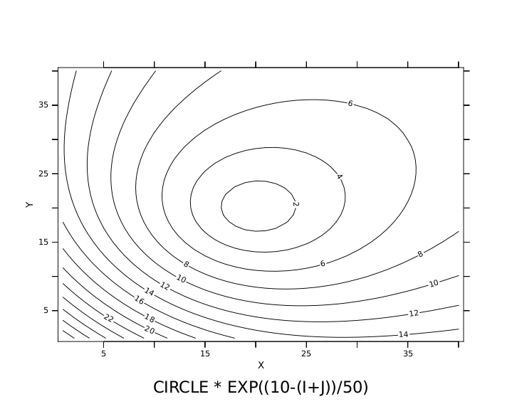
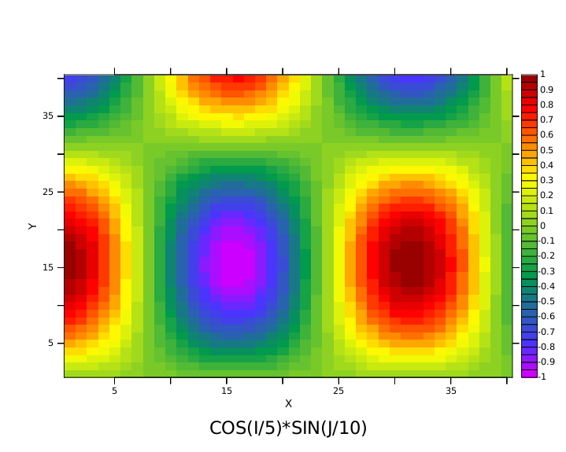
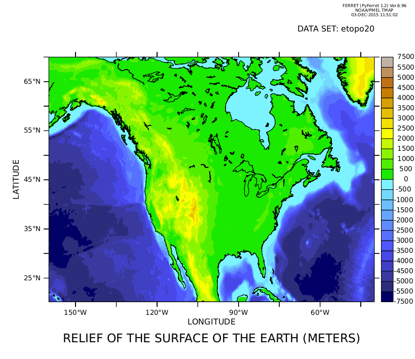
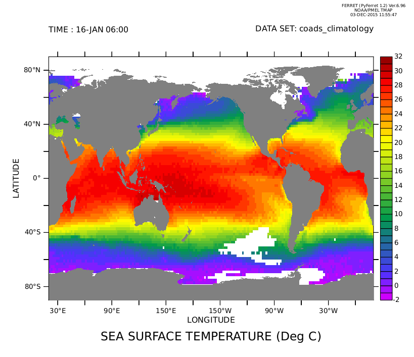
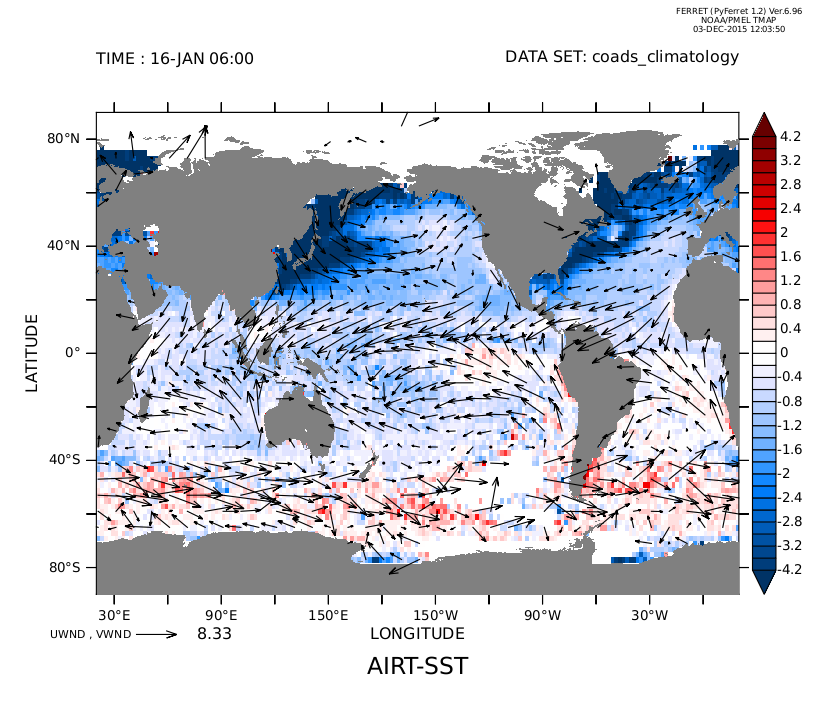
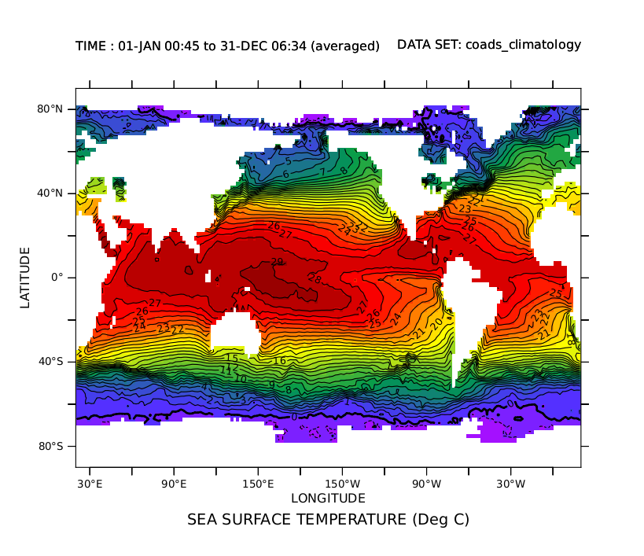
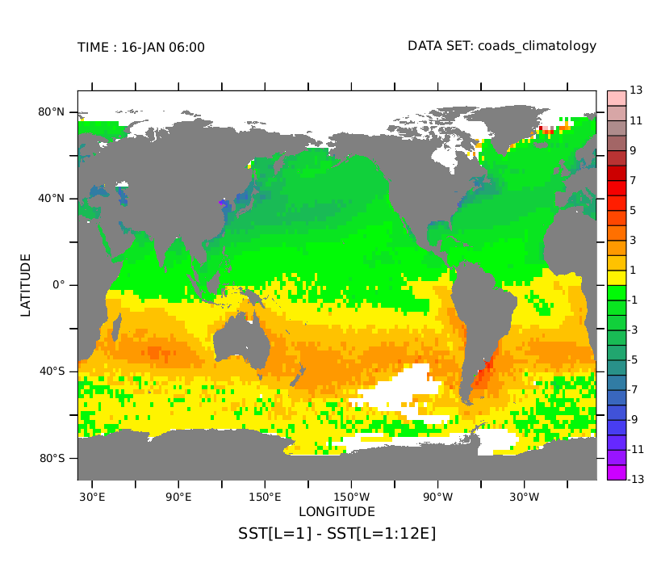
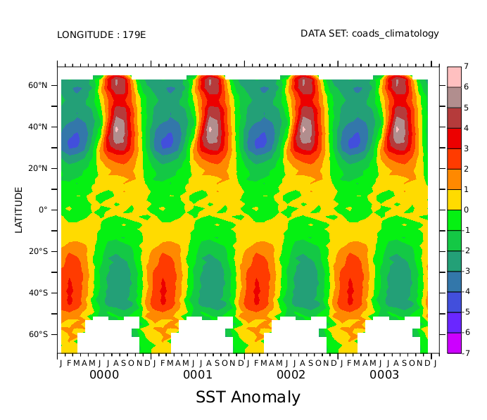
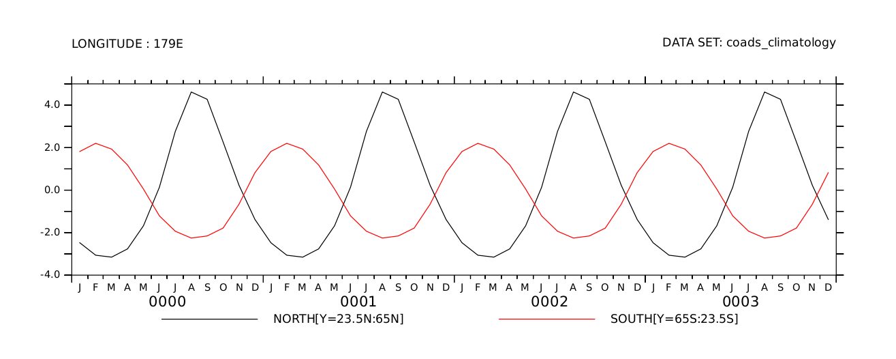

Ferret Tour
This tour will introduce the basic capabilities of the FERRET program through examples. As you continue your tour, you'll see exactly the commands that control Ferret. The commands will be in capital letters; FERRET prompts for input with the word "yes?"
The images shown are drawn using PyFerret. All of the commands and plots are unchanged when using classic Ferret (but with Ferret skip this first SET FONT command!)
> pyferret yes? set text/font=ariel
Suppose we want to plot values of 1/i for the first 10 integers i = 1, 2, 3, ..., 10 We can do that with the following command:
yes? PLOT/i=1:10 1/i

We can change the aspect ratio of the plot to a more pleasing size and shape and re-draw the plot
yes? SET WINDOW/SIZE=0.5/ASPECT=0.5 yes? PLOT/i=1:10 1/i

We can do the plot with marker symbols instead of a smooth curve:
yes? PLOT/i=1:10/SYMBOLS 1/i

We can define a new variable, "inverse", and give it a title of our choosing. In this plot we use both custom plot marks and a line and we specify the vertical plotting axis range.
yes? LET/TITLE="My inverse of I" iinverse = 1/i yes? PLOT/i=1:10/SYMBOLS=2/LINE/VLIMITS=-1:2:0.25 iinverse

We can combine several functions on the same plot
yes? PLOT/i=1:10 1/i, 1/(i+3), 1/i + 1/(10-i)

Now we'll plot all of the preceding graphs again, but in a single window. The parts of the window are called "viewports". They are named UL (for "upper left"!), LL, LR, and UR.
yes? CANCEL MODE LOGO ! clean up: don't draw the Ferret logo in the upper left yes? SET WINDOW/SIZE=.9 ! (bigger 'cause there will be 4 plots) yes? SET VIEWPORT UL yes? PLOT/i=1:10 1/i yes? SET VIEWPORT LL yes? PLOT/i=1:10/SYMBOLS 1/i yes? SET VIEWPORT LR yes? PLOT/i=1:10/SYMBOLS=2/LINE/VLIMITS=-1:2:0.25 iinverse yes? SET VIEWPORT UR yes? PLOT/i=1:10 1/i, 1/(i+3), 1/i + 1/(10-i)

Other forms of graphics are also available. Here we are just playing with simple 2-dimensional mathematical functions. Contouring ...
yes? CANCEL VIEWPORT yes? SET WINDOW/ASPECT=0.8/SIZE=0.5 yes? LET circle = ((i-20)^2 + (j-20)^2) ^ 0.5 yes? CONTOUR/i=1:40/j=1:40 circle * exp((10-(i+j))/50)

Vector arrows ... (later you will see how to overlay vector arrows)
VECTOR/i=1:20/j=1:20 i+cos(j/5)+5,i-j

A "raster" of color-shaded grid rectangles and a color key ...
yes? SHADE/i=1:40/j=1:40 cos(i/5)*sin(j/10)

The same figure drawn as a color-filled contour plot ...
yes? FILL/i=1:40/j=1:40 cos(i/5)*sin(j/10)

And a wire frame drawing (using more advanced grid definition commands)
yes? DEFINE AXIS/X=-4:4:.2 xax40 yes? DEFINE AXIS/Y=-4:4:.2 yax40 yes? DEFINE GRID/X=xax40/Y=yax40 g_gauss yes? SET GRID g_gauss yes? LET GAUSS = 2*EXP(-1*((x[g=g_gauss]/2)^2 + y[g=g_gauss]^2)) yes? WIRE/VIEWPOINT=-4,-10,4 gauss yes? SET GRID ABSTRACT ! restore default grid for demos

Now we'll look at some real world data.
To begin we inform FERRET of the "data set" of interest using the SET DATA command. The ETOPO20 data set contains the relief of the surface of the earth at 20 minute resolution.
yes? SET DATA etopo20
We can query FERRET for the contents of the data set with the SHOW DATA command. The output of SHOW DATA immediately follows the command, below.
yes? SHOW DATA currently SET data sets: 1> /home/users/tmap/ferret/linux/fer_dsets/data/etopo20.cdf (default) name title I J K L M N ROSE RELIEF OF THE SURFACE OF THE EA 1:1081 1:540 ... ... ... ...
What we see is a single variable, "ROSE", and its 6-dimensional limits. The letters I,J,K,L, and M refer to its limits along the X,Y,Z, and T axes, respectively, plus two more, used for other purposes such as Ensembles and Forecasts. ROSE is a 2-dimensional variable; it exists in the XY (latitude-longitude) plane.
Let's look at a shaded plot of the earth's relief. Since we don't specify any limits the full extent of the data will be used.
yes? SHADE ROSE

Or we can zoom in on North America (long. 160W:40W, lat. 20N:70N) using a 500 meter vertical resolution and a filled-contour plot.
yes? FILL/X=160W:40W/Y=20N:70N/level=(-7000,4000,500) ROSE

... and finally, use a more appropriate color palette, use automatically-chosen centered levels, and overlay the continental boundaries. The "1" below specifies pen color one (black) for the continents. The GO command can run "scripts" to perform a wide variety of tasks. Go scripts are files of ordinary FERRET commands.
yes? FILL/X=160W:40W/Y=20N:70N/level=cv/palette=land_sea ROSE yes? go land_detail 1

Now let's turn our attention to another data set -- the Comprehensive Ocean Atmosphere Data Set ("COADS")
yes? SET DATA coads_climatology yes? SHOW DATA coads_climatology currently SET data sets: 2> /home/users/tmap/ferret/linux/fer_dsets/data/coads_climatology.cdf (default) name title I J K L M N SST SEA SURFACE TEMPERATURE 1:180 1:90 ... 1:12 ... ... AIRT AIR TEMPERATURE 1:180 1:90 ... 1:12 ... ... SPEH SPECIFIC HUMIDITY 1:180 1:90 ... 1:12 ... ... WSPD WIND SPEED 1:180 1:90 ... 1:12 ... ... UWND ZONAL WIND 1:180 1:90 ... 1:12 ... ... VWND MERIDIONAL WIND 1:180 1:90 ... 1:12 ... ... SLP SEA LEVEL PRESSURE 1:180 1:90 ... 1:12 ... ...
As you can see there are a number of variables and there are 12 points on the time (L) axis. Within FERRET "variables" are always defined on "grids"; "grids" are always composed of 1 to 4 "axes"; and "axes" are composed of numerous points. We can query FERRET to learn more about the grid and axes upon which the variable SST is defined using the SHOW GRID command. (The output of "SHOW GRID SST" follows the command.)
yes? SHOW GRID SST GRID COADS2 name axis # pts start end COADSX LONGITUDE 180mr 21E 19E(379) COADSY LATITUDE 90 r 89S 89N normal Z TIME1 TIME 12mr 16-JAN 06:00 16-DEC 01:2
We can further inquire about the coordinates of axis points by specifying which axis and what range of values we are interested in. For example:
yes? SHOW GRID/L=1:4 SST GRID COADS2 name axis # pts start end COADSX LONGITUDE 180mr 21E 19E(379) COADSY LATITUDE 90 r 89S 89N normal Z TIME1 TIME 12mr 16-JAN 06:00 16-DEC 01:20 L T BOX_SIZE TIME_STEP (hour) 1> 16-JAN 06:00 730.48 366 2> 15-FEB 16:29 730.48 1096.5 3> 17-MAR 02:58 730.48 1827 4> 16-APR 13:27 730.48 2557.5
OK. Now lets use the SHADE command to make a color shaded plot of the sea surface temperature at the first time step, and overlay "filled" continents instead of an outline. Notice the regions where there are gaps in the COADS data set
yes? SHADE/L=1 SST yes? GO fland ! overlay "filled" continents

Just as simply we can look at the air-sea temperature difference. Again, choose a color palette and centered color levels, to show where the differences are positive and negative.
yes? SHADE/L=1/palette=blue_red_centered/levels=vc AIRT-SST yes? GO fland

VECTOR/OVERLAY/L=1 UWND, VWND

A thought exercise to the viewer: If sensible heat exchange can be computed by the equation
QSENS = COEF * WSPD * (AIRT-SST)
where WSPD is the COADS wind speed and COEF is an arbitrary coefficient
- How would you produce a shaded plot of QSENS at L=1 ?
- How would you produce a time series plot for all 12 months at a point of your choosing in the North Atlantic ?
OK... Lets look at the annual variation of the sea surface temperature by displaying the four seasons on a single plot.
yes? SET WINDOW/SIZE=0.7 yes? SET VIEW Ul yes? SHADE/L=3/LEVELS=(-3,33,2) sst yes? SET VIEW UR yes? SHADE/L=6/LEVELS=(-3,33,2) sst yes? SET VIEW LL yes? SHADE/L=9/LEVELS=(-3,33,2) sst yes? SET VIEW LR yes? SHADE/L=12/LEVELS=(-3,33,2) sst

It's difficult to pick out the differences in the fields, isn't it ?
FERRET has many ways to help you explore this kind of problem. Lets begin by looking at the average over all 12 time steps. We do this with the "AVE" transformation applied to the time axis.
"SHADE/LINE" tells FERRET to overlay contour lines instead of putting a color key on the plot.
yes? CANCEL VIEWPORTS yes? SHADE/LINE SST[L=1:12@AVE]

Now lets look at how the first time step differs from this average. We'll use a color palette that emphasizes which regions are positive and which are negative.
Notice that the plot is for January. The northern hemisphere is in winter -- hence colder than the annual average. The opposite is true in the southern hemisphere.
yes? SHADE/PALETTE=centered SST[L=1] - SST[L=1:12@AVE] yes? GO fland

Now lets look at the four seasons as we did before -- but this time plotting the anomaly from the annual average field. The contour levels were chosen to emphasize the variations.
yes? SET WINDOW/SIZE=.7 yes? LET SST_AVE = SST[L=1:12@AVE] yes? LET/TITLE="SST Anomaly" SST_ANOM = SST - SST_AVE yes? SET VIEW UL yes? SHADE/L=3/LEVELS=(-14)(-5,5,1)(14)/PALETTE=centered sst_anom yes? SET VIEW UR yes? SHADE/L=6/LEVELS=(-14)(-5,5,1)(14)/PALETTE=centered sst_anom yes? SET VIEW LL yes? SHADE/L=9/LEVELS=(-14)(-5,5,1)(14)/PALETTE=centered sst_anom yes? SET VIEW LR yes? SHADE/L=12/LEVELS=(-14)(-5,5,1)(14)/PALETTE=centered sst_anom<

Lets focus our attention at a particular longitude, say, X=180, the International Dateline. We can get an accurate picture of the SST changes there by producing a 2-dimensional view along the Y and T axes. We will use the SET REGION command to confine ourselves to X=180.
The time axis of this data set is referred to as a "modulo" axis -- that is, the first month follows on after the last in a circular way. So the L=1:48 qualifier repeats the data over 4 cycles in time -- emphasizing its modular nature.
yes? CANCEL VIEWPORTS yes? SET WINDOW/SIZE=.5 yes? SET REGION/X=180 yes? FILL/Y=70S:70N/L=1:48/LEVELS=(-7,7,1) SST_ANOM

Our plot shows the expected out of phase behavior between north and south. Lets summarize the results by averaging separately within the northern and southern temperate zones (23.5 to 65 degrees latitude). We can then plot the two time series that result.
yes? SET WINDOW/ASPECT=0.4 yes? LET NORTH = SST_ANOM[Y=23.5N:65N@AVE] yes? LET SOUTH = SST_ANOM[Y=65S:23.5S@AVE] yes? PLOT/L=1:48 NORTH, SOUTH

We can list the first 5 months to the screen with the LISTcommand:
yes? LIST/L=1:5 NORTH, SOUTH DATA SET: /home/e1/tmap/fer_dsets/descr/coads_climatology.des COADS Monthly Climatology (1946-1989) TIME: 01-JAN to 01-JUN LONGITUDE: 179E Column 1: NORTH[Y=23.5N:65N] is SST_ANOM[Y=23.5N:65N@AVE] Column 2: SOUTH[Y=65S:23.5S] is SST_ANOM[Y=65S:23.5S@AVE] NORTH SOUTH 16-JAN / 1: -2.475 1.818 15-FEB / 2: -3.063 2.203 17-MAR / 3: -3.153 1.931 16-APR / 4: -2.765 1.183 16-MAY / 5: -1.677 0.049
Sending the listed results to a file (with a variety of formats) requires only the addition of "/FILE=filename".
This is the end of the tour. You've been shown a number of FERRET's capabilities:
- Line, contour, vector and shaded plots
- Multiple viewports, and windows
- Color controls
- Abstract mathematical functions, data from data sets, and new variables defined from old ones
- Transformations and plots along various axes
And there's much more. Thanks for stopping by!